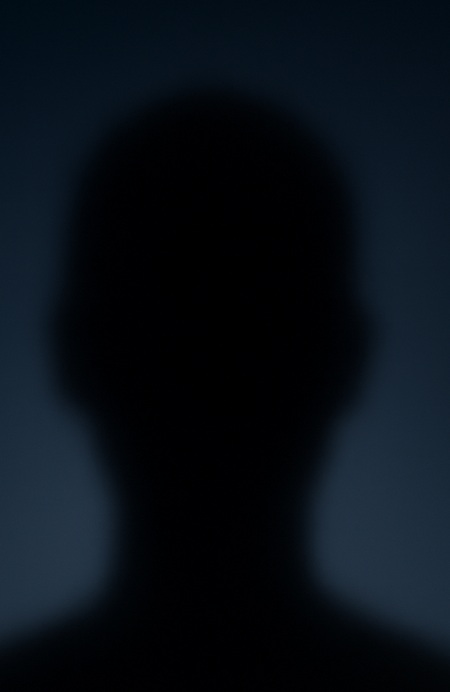

Como você é

Com máscara

Como sombra
A rede social onde você escolhe como aparecer: como você é, com máscara, ou como sombra.
Explore ambientes interativos, desafios colaborativos e conexões reais no mundo híbrido.
Como você é
Com máscara
Como sombra
A TriadX é a nova fronteira das interações sociais — onde você escolhe como quer ser visto: como avatar 3D, com sua imagem real estilizada por IA ou de forma anônima como uma sombra interativa.
Explore salões de ideias, estúdios de criatividade, praças sensoriais e espaços para conexão íntima. Tudo em um único ambiente, seguro e surpreendente.